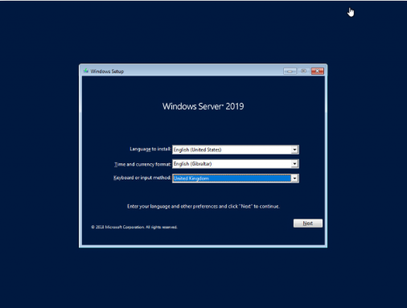
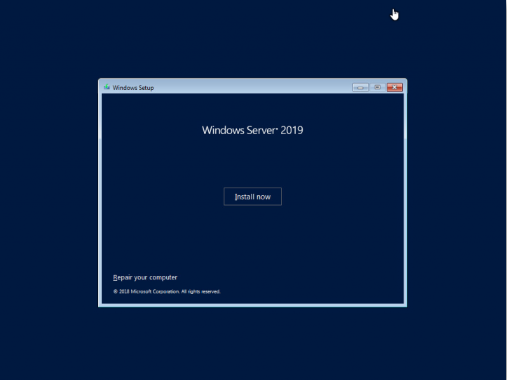
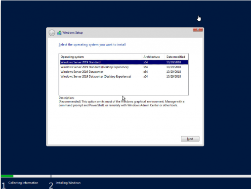
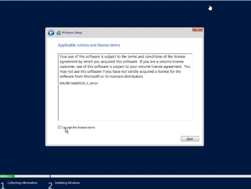
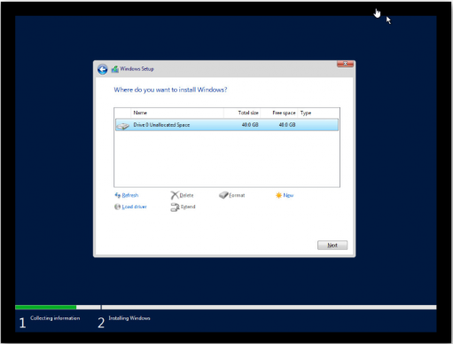
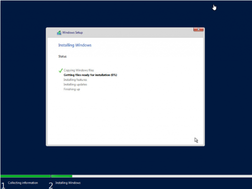
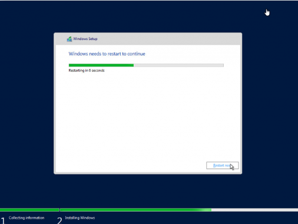
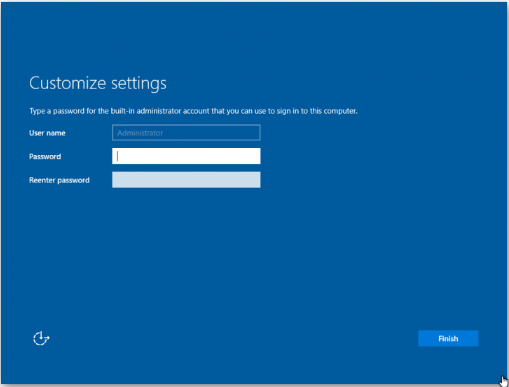
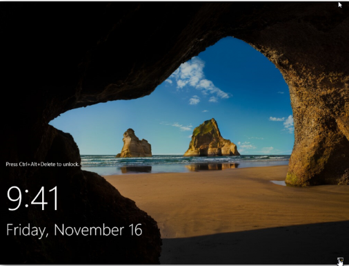
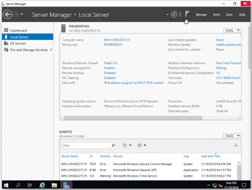

Instalar Microsoft Windows Server 2019 paso a paso
Cómo instalar Windows Server 2019
En el artículo de hoy os mostraré rápidamente cómo instalar Windows Server 2019.
La verdad que el proceso no tiene ningún misterio.
Vamos al lío pero primero de
todo dejo un enlace con todas las novedades de Windows Server 2019.
Novedades Windows Server 2019
Primero de todo, como es obvio, descargamos la ISO de Windows Server 2019. Creamos una
máquina virtual o la instalamos en nuestro
servidor físico, el procedimiento será el mismo.
Una vez carga la ISO, seleccionamos el idioma.
Pulsamos Next y Install Now.
Seleccionamos la versión que queremos instalar. Ojo! si queréis el entorno gráfico, seleccionar Desktop experience.
Aceptamos la licencia.
Seleccionamos el disco y creamos las particiones.
Y empezará la copia de ficheros e instalación.
Transcurridos unos minutos finaliza y tendremos que reiniciar el servidor.
Una vez reiniciado, introduciremos el password de nuestro Administrador.
Y ya podremos hacer login.
Una vez hecho login, encontramos el Server Manager tan conocido desde Windows Server 2012.
| Realizado por: | Siguenos en las redes sociales: |
| Begoña Calvo, Daniel Artigues y Carlos Agueda |


|